Depth that grows with the sequence.
Each token extends the recurrent path through the full decoder. After \(t\) tokens, that path traverses \(tL_D\) decoder blocks while the per-token block count stays fixed.
Hidden-state recurrence · Depth allocation · Length generalization
Recurrent computation across prompt and response.
Six algorithmic tasks, depth-eight and depth-sixteen results, and feedback variants.
Recurrent Looped Transformer (RLT-1) feeds the previous token's final decoder state into the current token's decoder input through a gated merge. A causal encoder supplies token representations and global key–value memory, while the decoder maintains local sliding-window attention (SWA) caches. This recurrence extends the computation path with sequence length at a fixed number of block evaluations per token, but requires sequential decoder updates during both training and prompt prefill. We evaluate five eight-layer encoder–decoder splits against a decoder-only Transformer on six algorithmic tasks, using three initialization seeds and shared training and test data. Several RLT-1 splits learn parity earlier, and the 5+3 and 7+1 splits retain 100% accuracy at 256 bits in all three seeds. On swaps-based permutation tracking at length 512, 4+4 reaches 55.70±25.78% final-state accuracy, compared with 0.85±0.30% for the Transformer (mean ± sample standard deviation). The gains depend on the task and depth split: teacher-forced addition accuracy falls beyond trained operand widths, flat modular arithmetic is sensitive to initialization, and standard permutation tracking remains difficult.
Each token extends the recurrent path through the full decoder. After \(t\) tokens, that path traverses \(tL_D\) decoder blocks while the per-token block count stays fixed.
Batch known-token encoder work and independent decoder updates. Reuse weights and memory, and checkpoint activations while preserving the reference computation.
Rebuild the full history under current parameters, including prompt states and decoder SWA KV. Keep recorded behavior probabilities tied to the actual sampler.
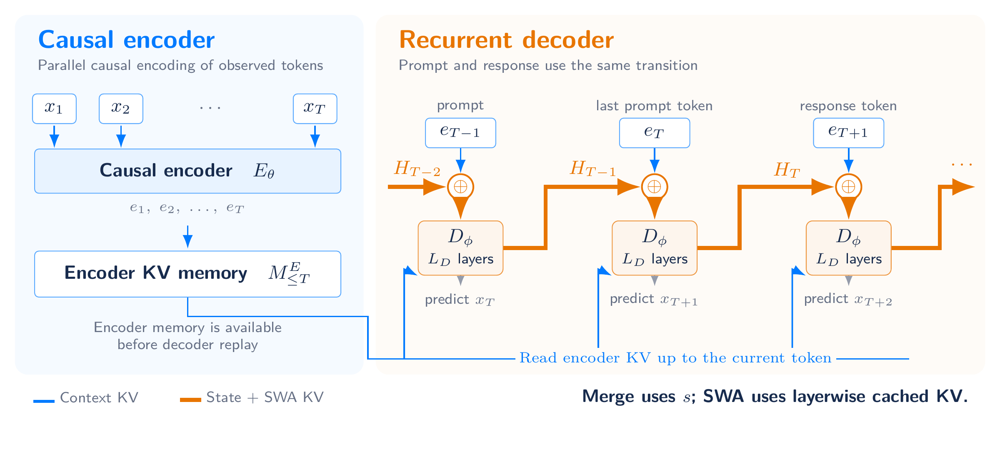
Here \(M_{\le t}\) is global encoder memory, \(s_t\) is the recurrent output, and \(C_t^D\) contains layerwise decoder KV. A SWA window of \(W\) includes the current token and retains at most \(W-1\) historical entries for the next update.
Compatible encoder and decoder attention and FFN weights can be shared. A tied 48+48 layout illustrates this option in the report; the experiments below use untied eight- and sixteen-layer layouts.
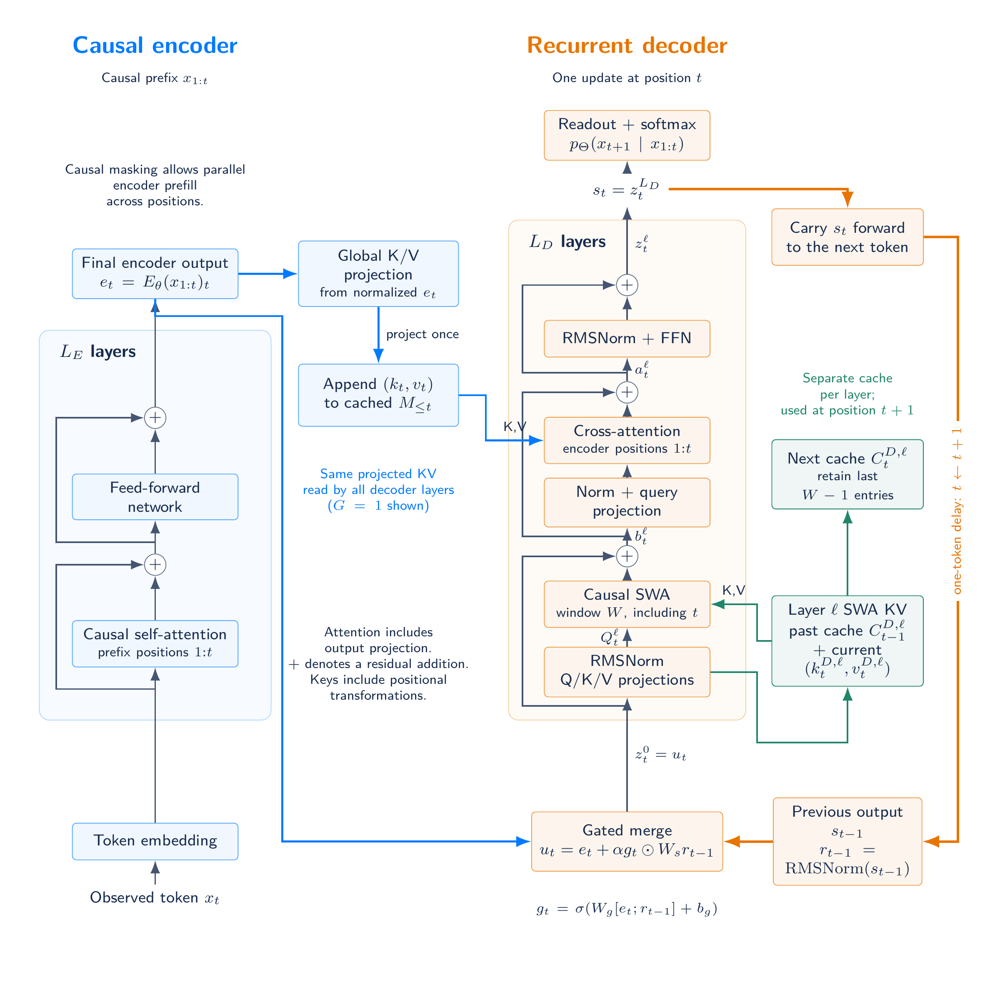
RLT-0 removes the previous-output feedback path, learned initial state, state normalization, gated merge and feedback projection. It feeds \(z_t^0=e_t\) directly into the decoder while retaining global cross-attention and per-layer SWA.
Known tokens run in parallel within each decoder layer during training and prefill; generation proceeds one token at a time. The mod-5 experiments evaluate RLT-0 at splits 4+4 through 8+0; it removes 787,968 feedback parameters per split.
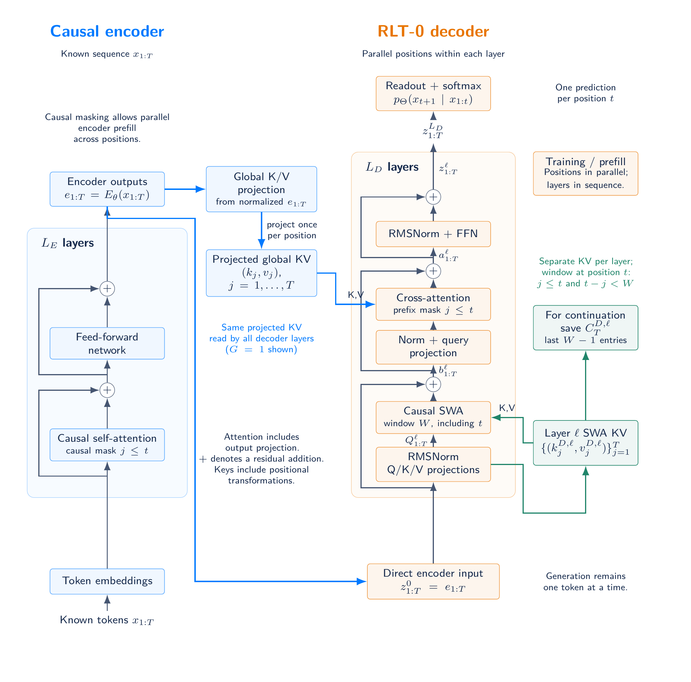
RLT-2 holds the feedback state fixed within a chunk and updates it from the last decoder output at a complete chunk boundary. Known positions can run together within each decoder layer, using causal SWA and prefix-restricted encoder memory. Chunk boundaries are anchored at BOS and continue across prompt, response and message boundaries; a partial chunk preserves the previous boundary state. With chunk size B = 1, the equations recover RLT-1 at the same weights. The mod-5 experiments evaluate chunk sizes four and eight and report measured CPU training-step times.
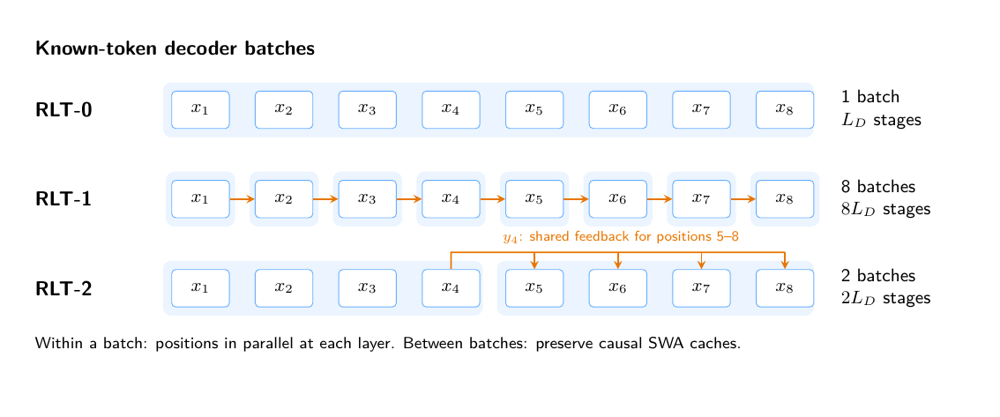
Depth eight: three seeds · Depth sixteen: seed 42 · Mod-5 feedback variants · CPU step times
The September 17, 2026 snapshot compares RLT-1 4+4, 5+3, 6+2, 7+1, 8+0 and Transformer 8 on six algorithmic tasks. All 108 runs completed 2,000 optimizer steps, using initialization seeds 42, 43 and 44 for every task. Training examples and held-out sets are fixed across initializations. All aggregates report mean ± sample standard deviation (n = 3, ddof = 1).
Models use width 512, FFN width 1,365, four attention heads, global batch 512, microbatch 32 and the same AdamW schedule. RLT-1 uses an SWA window of eight, one shared encoder-memory group, feedback scale 0.1 and TBPTT 128, which covers every training sequence and cuts no gradients here. RLT-1 has 26.10–28.73M parameters; Transformer 8 has 25.31M. The 8+0 variant has no decoder blocks but still applies the gated recurrent merge.
Values are percentages, reported as mean ± sample SD across three initializations. Each run has consumed 1,024,000 training examples. Addition measures teacher-forced answer-token accuracy, including answer formatting and EOS, excluding prompt and padding positions. Parity and mod-5 score the final label; S5 scores the final state.
| Task | RLT-1 4+4 | RLT-1 5+3 | RLT-1 6+2 | RLT-1 7+1 | RLT-1 8+0 | Transformer 8 |
|---|---|---|---|---|---|---|
| Addition | 100.00±0.00 | 100.00±0.00 | 100.00±0.00 | 100.00±0.00 | 100.00±0.00 | 100.00±0.00 |
| Parity | 100.00±0.00 | 100.00±0.00 | 100.00±0.00 | 100.00±0.00 | 98.83±1.92 | 94.84±3.43 |
| Mod 5, no brackets | 45.36±46.43 | 94.18±7.29 | 69.62±33.01 | 70.01±43.15 | 60.33±35.70 | 64.02±37.64 |
| Mod 5, brackets | 70.53±10.75 | 74.35±6.71 | 74.87±3.72 | 74.78±3.01 | 75.17±6.78 | 73.87±9.07 |
| S5, swaps | 100.00±0.00 | 100.00±0.00 | 100.00±0.00 | 99.35±0.81 | 99.61±0.68 | 99.09±0.23 |
| S5, standard | 0.78±0.68 | 2.47±1.26 | 2.21±1.48 | 2.08±0.98 | 1.82±1.19 | 0.52±0.23 |
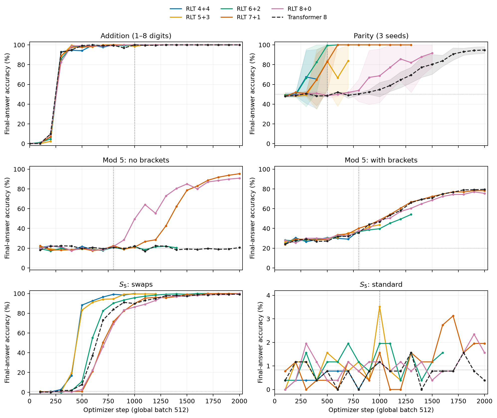
All curves extend through step 2,000. Bands show sample SD, clipped to the accuracy range. Standard S5 uses a narrower vertical scale. PDF
At step 500, RLT-1 6+2 reaches 99.44 ± 0.98% parity accuracy, compared with 48.48 ± 0.53% for Transformer 8. All three 6+2 seeds reach 100% by step 600. At step 2,000, splits 4+4 through 7+1 reach 100% in all three seeds, while Transformer 8 reaches 94.84 ± 3.43%.
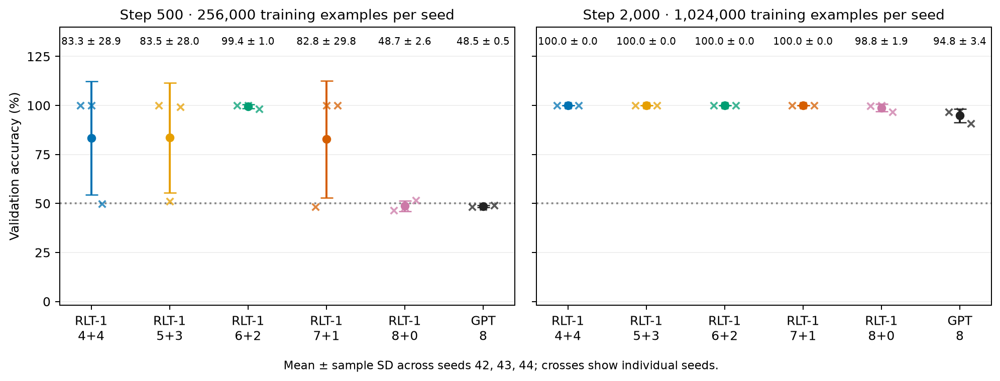
Both panels use the same 768 validation examples. They correspond to 256,000 and 1,024,000 training examples per seed. SD whiskers can extend beyond 100%. PDF
Flat mod-5 varies strongly with initialization: RLT-1 5+3 reaches 94.18 ± 7.29%, compared with 64.02 ± 37.64% for Transformer 8. The three 4+4 seeds score 17.58%, 19.53% and 98.96%. Bracketed mod-5 model means are closer, spanning 70.53–75.17% for RLT-1 versus 73.87 ± 9.07% for the Transformer. The generators differ in operator structure and label distribution; parentheses also occupy token positions.
Each run selects its lowest in-distribution validation-loss checkpoint over the full training history, taking the earliest step on ties. Test results do not enter selection. At every task and length, all models and seeds receive the same 256 addition pairs or 1,024 formal-task sequences. The evaluation covers 846 model–seed–length combinations, summarized as 282 three-seed means and sample SDs.
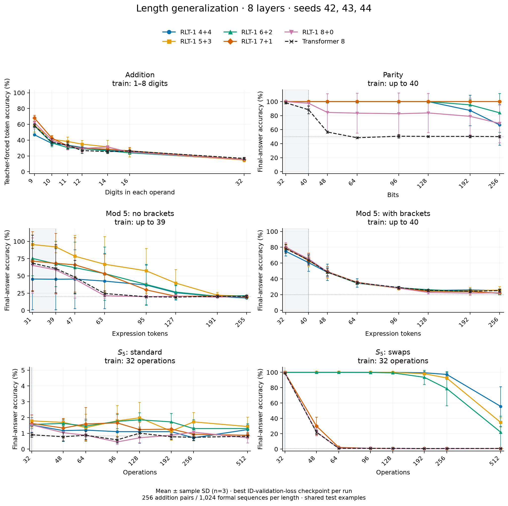
Gray regions mark training lengths. Addition uses teacher-forced answer tokens; other tasks use final labels or states. Error bars show sample SD across initialization seeds. PDF
All entries are percentages, mean ± sample SD across three initializations. Addition lengths count digits per operand; formal-task lengths count input symbols or operations, excluding boundary markers.
| Task (test length) | RLT-1 4+4 | RLT-1 5+3 | RLT-1 6+2 | RLT-1 7+1 | RLT-1 8+0 | Transformer 8 |
|---|---|---|---|---|---|---|
| Addition (32) | 15.30±0.44 | 14.89±2.27 | 15.74±1.58 | 15.59±1.57 | 15.31±0.93 | 16.84±1.45 |
| Parity (256) | 66.76±28.78 | 100.00±0.00 | 84.05±27.63 | 100.00±0.00 | 68.91±27.39 | 50.07±1.63 |
| Mod 5, no brackets (255) | 18.00±0.39 | 20.57±0.62 | 21.42±0.49 | 19.34±0.54 | 20.44±0.91 | 20.35±2.01 |
| Mod 5, brackets (256) | 25.20±1.71 | 25.81±4.34 | 21.58±1.86 | 22.04±1.72 | 22.30±1.13 | 25.07±2.05 |
| S5, standard (512) | 1.24±0.30 | 1.43±0.60 | 1.30±0.31 | 0.88±0.20 | 0.72±0.31 | 0.81±0.06 |
| S5, swaps (512) | 55.70±25.78 | 34.86±6.10 | 22.14±20.95 | 0.85±0.06 | 0.85±0.20 | 0.85±0.30 |
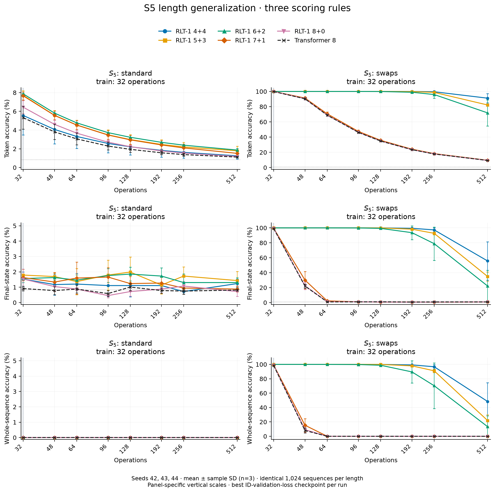
Whole-sequence accuracy requires every prefix prediction to be correct. Every model uses the same 1,024 sequences at each length. Each panel labels its vertical scale. PDF
The preferred encoder–decoder split depends on the task. These depth-eight comparisons change feedback, attention structure, parameter count and compute together. The separate mod-5 study compares RLT-0, RLT-1 and RLT-2 at each split, with parameter counts and training-step times reported.
Training loss, individual parity seeds, fixed-length token accuracy, and token-level length generalization provide additional diagnostics. Training loss is unsmoothed and measured before the optimizer update; all six tasks use three seeds.
Depth-eight experiment figures and protocol
Earlier state-tracking results contributed by @AradhyeAgarwal use a separate implementation with about 79K parameters, three seeds and training length 32. Evaluation uses 2,048 test programs per task and length, extending to 128 operations.
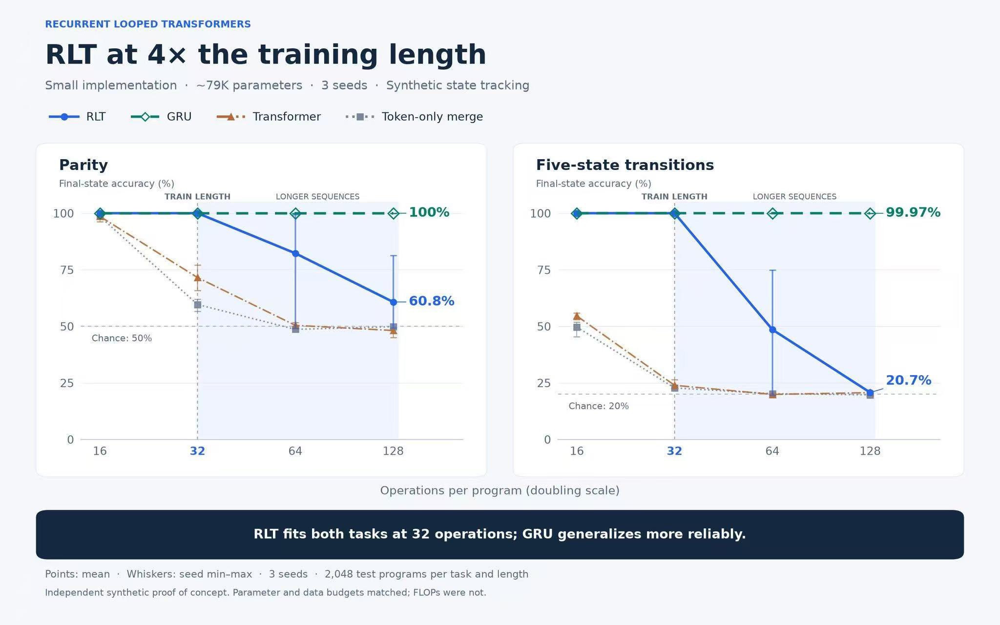
The September 20, 2026 snapshot adds addition and parity results for RLT-1 8+8 through 16+0 and Transformer 16, using seed 42. All models use width 512, FFN width 1,365, four heads and microbatch 32. These are untied layouts. Checkpoints minimize in-distribution validation loss, with earliest-step tie breaking; test results do not select checkpoints.
All ten runs completed 2,000 steps, using mixed 1–8-digit training data and global batch 512. Every model selects step 2,000. Teacher-forced answer-token accuracy includes answer formatting and EOS; each test width uses the same 256 operand pairs as the eight-layer study. RLT-1 has 51.27–56.00M parameters; Transformer 16 has 50.49M.
Transformer 16 leads all nine RLT-1 splits at widths nine through twelve. At nine digits, it reaches 84.51%, versus 47.32–71.10% for RLT-1. At 32 digits, all ten models fall to 14.73–16.62%. RLT-1 8+8 reaches 55.72% at nine digits, compared with 47.17% for 4+4 in the seed-42 depth-eight run.
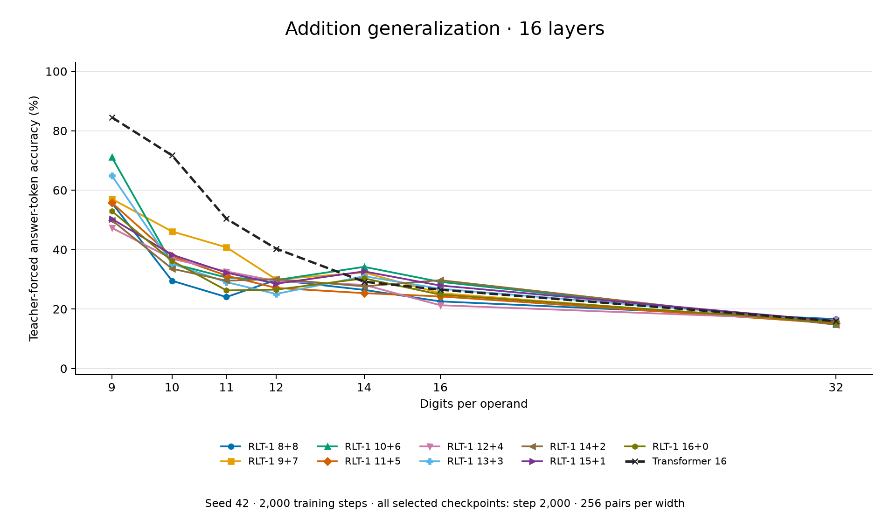
4+4 versus 8+8 comparison · Vector figure
Parity training uses lengths 3–40, global batch 1,024 and a 2,000-step budget. Nine runs completed training. The ongoing 8+8 run selects step 1,400 from a history through step 1,800; the completed 9+7 run selects step 1,300. Each test length has 1,024 shared examples. 8+8, 9+7, 11+5 and 16+0 retain 100% accuracy at 256 bits, compared with 49.41% for Transformer 16.
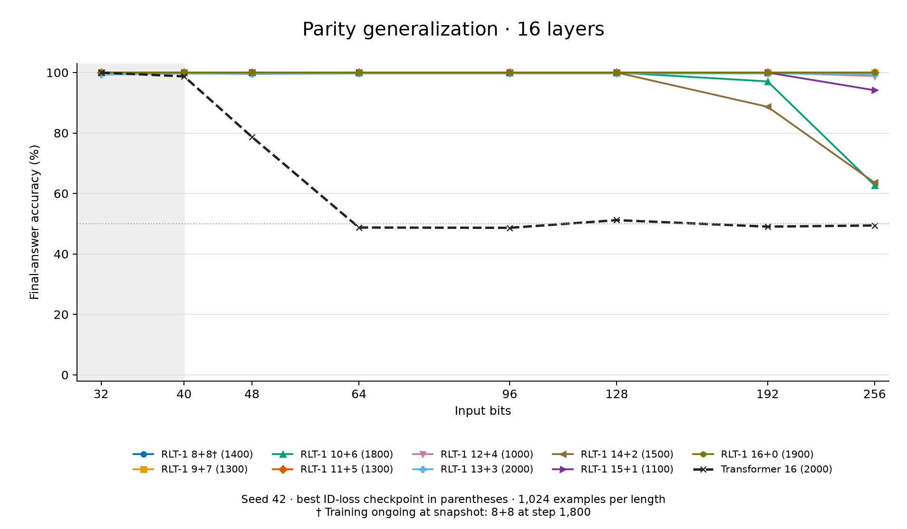
Accuracies below are percentages from one initialization seed. Addition uses answer-token accuracy at step 2,000; parity scores the final answer at the listed checkpoint. † marks ongoing parity training; all addition runs are complete.
| Model | Addition: 9 digits | Addition: 32 digits | Parity checkpoint | Parity: 256 bits |
|---|---|---|---|---|
| RLT-1 8+8 † | 55.72 | 16.62 | 1,400 | 100.00 |
| RLT-1 9+7 | 57.04 | 15.07 | 1,300 | 100.00 |
| RLT-1 10+6 | 71.10 | 14.88 | 1,800 | 62.70 |
| RLT-1 11+5 | 55.78 | 15.18 | 1,300 | 100.00 |
| RLT-1 12+4 | 47.32 | 16.21 | 1,000 | 98.83 |
| RLT-1 13+3 | 64.91 | 15.93 | 2,000 | 99.41 |
| RLT-1 14+2 | 49.90 | 14.73 | 1,500 | 63.57 |
| RLT-1 15+1 | 50.36 | 15.92 | 1,100 | 94.14 |
| RLT-1 16+0 | 52.94 | 15.60 | 1,900 | 100.00 |
| Transformer 16 | 84.51 | 15.92 | 2,000 | 49.41 |
The September 20 snapshot compares RLT-1, RLT-0 and RLT-2 with chunk sizes four and eight, at splits 4+4 through 8+0, plus Transformer 8. All runs use seed 42, width 512, FFN width 1,365, four heads, global batch 512, microbatch 32, four CPU threads and FP32. The 5,000-step schedule includes 200 warmup updates and cosine decay from 0.0001 to 0.000005. RLT-1 and RLT-2 use TBPTT 128, which covers every training sequence; RLT-0 uses full BPTT and removes 787,968 feedback parameters per split.
40 of 42 runs completed 5,000 steps, contributing 360 model–length test points. RLT-1 4+4 remains ongoing at 4,300 steps without brackets and 4,900 with brackets. Validation curves include these unfinished runs; length-generalization curves use completed runs' best ID-loss checkpoints and 1,024 shared examples per length. All results use one seed, so the figures have no across-seed error bars.
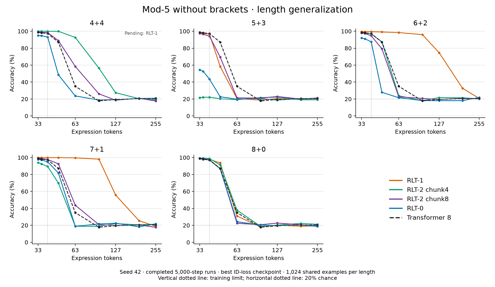
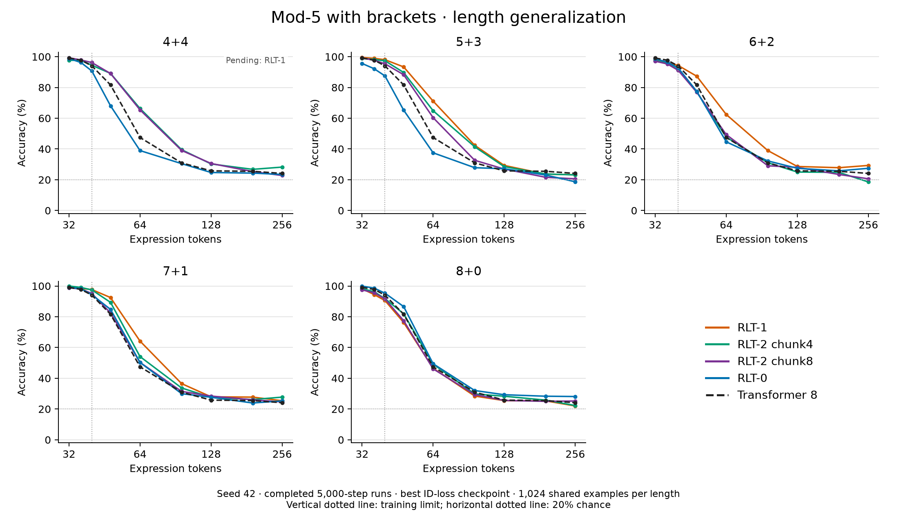
Vertical dotted lines mark the training limit; horizontal dotted lines mark 20% chance accuracy. Flat validation curves · Bracketed validation curves
The recorded 4+4 step times average steps 1,001–2,000, excluding validation, checkpoint writes and logging. These measurements use four CPU threads and FP32 on a shared cluster; node load varies.
| Model (4+4) | Flat mod-5: seconds/step | Bracketed mod-5: seconds/step |
|---|---|---|
| RLT-1 | 62.59 | 54.09 |
| RLT-2 chunk4 | 27.52 | 23.81 |
| RLT-2 chunk8 | 18.55 | 17.33 |
| RLT-0 | 14.54 | 12.98 |
Relative to RLT-1, chunk4 steps are 2.27× as fast, chunk8 steps 3.12–3.37×, and RLT-0 steps 4.17–4.30× across the two tasks. These measurements cover training steps; they do not measure GPU throughput, inference speed or RL performance.
Figures and experimental protocol · Source data and checkpoint records
Known tokens can be encoded in a causal batch. Decoder updates still proceed in token order, constructing both recurrent outputs and decoder SWA caches.
| Mode | Encoder | Decoder |
|---|---|---|
| Prompt prefill | Causal batch | Update complete state through every prompt token. |
| Generation | Incremental | Sample from the preceding state, then consume each token exactly once. |
| Pretraining | Causal batch | Full BPTT over all valid next-token targets. |
| SFT | Causal batch | Assistant-target loss; all context tokens update differentiable state. |
| RL replay | Rebuild with current weights | Replay the complete history and SWA caches; score each action before consuming it. |
Forward consistency and complete gradients are separate requirements. Full BPTT includes paths through recurrent outputs, decoder KV, and encoder memory. Detaching any of these changes the gradient. Parameter updates invalidate old caches for exact current-policy replay.
Behavior log-probabilities must describe the actual sampling distribution. Exact importance sampling additionally requires support coverage. Shared transitions remove structural prompt-boundary mismatch; numerical kernel parity and off-policy estimation remain separate concerns.
For the execution-level distinction, see the prefill–decode kernel mismatch note.
If you find this work useful, please cite:
@techreport{zhang2026recurrentlooped,
title = {Recurrent Looped Transformer},
author = {Zhang, Yifan and Feng, Jichen and Qin, Shihan},
year = {2026},
month = sep,
url = {https://github.com/yifanzhang-pro/recurrent-looped-tranformer}
}{kind=link}
{kind=link}
{kind=link}
{kind=link}
{kind=link}
{kind=link}
{kind=link}
{kind=link}
{kind=link}
{kind=link}
{kind=link}
{kind=link}
{kind=link}
{kind=link}
{kind=link}
{kind=link}
{kind=link}